السلسلة 32
السيارة (صنف B) · 40 سؤال. كل سؤال فيه الصورة والصوت. اختار الجواب (ولا جوج إلا كانو صحاح)، ورك على «تأكيد» باش تشوف واش صبتي.
- 40سؤال
- 32باش تنجح
- 1 – 4جواب واحد ولا أكثر
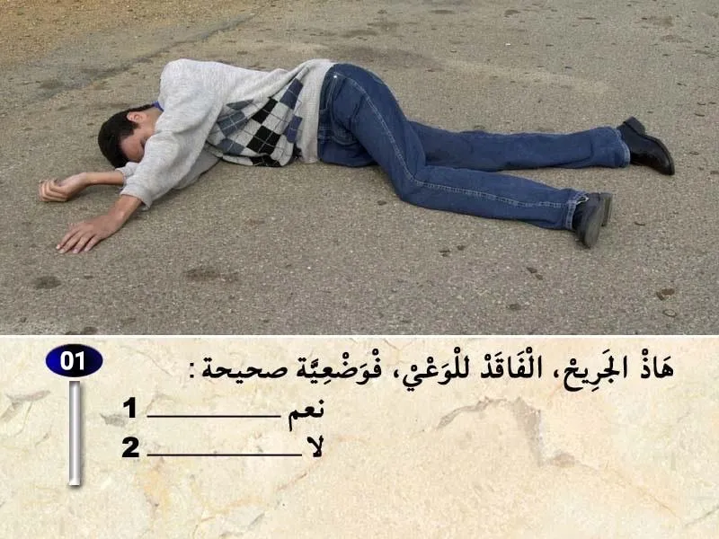
الكلافيي: 1–4 للجواب، Enter للتأكيد وللسؤال الجاي.
السلسلة 32 · النتيجة ديالك
0 / 40
السلسلة 32
السيارة (صنف B) · 40 سؤال، بالصوت، مع الجواب الصحيح والشرح.
السؤال 1
بيّن الجواب
الجواب الصحيح: 1
بالنسبة لهذا الجريح الفاقد للوعي فالوضعية الجانبية الصحيحة هي أن يكون مستلقي على الجهة اليمنى، ورجله تكون مثنية قليلا على شكل زاوية قائمة وفمه يكون في إتجاه الأرض (كما الصورة) إذن هذا الجريح فهو في وضعية صحيحة.
السؤال 2
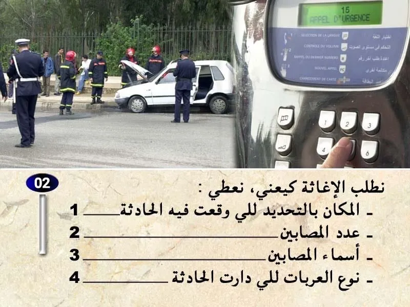
بيّن الجواب
الجواب الصحيح: 1 و 2 و 4
غعندما نطلب الإغاثة فنحن سوف نقوم بالإتّصال إمّا بالوقاية المدنية ورقمها 15 أو الإتصال بالشرطة ورقمها 19 أو 190 أو الدرك الملكي ورقمه 177. بعد ذلك سوف يتحدث معنا الشخص المسؤول عن الإغاثة، وسوف يطلب منا معلومات مثل المكان بالتحديد الذي وقعت فيه الحادثة (مثلا الشارع وأين وقعت بالضبط لكي تأتي الإغاتة إلى مكان الحادث بالتحديد وبسرعة) وكم هو عدد المصابين في مكان الحادث (لكي يعرف مسؤولو الإغاثة كم عدد سيارات الإسعاف التي يجب أن يرسلوها لنقل المصابين)، بالنسبة لأسماء المصابين فلا يحتاجون إليها في هذه اللحظة، كما أننا يجب أن نقوم بإعلامهم بنوع (أو الصنف) العربات التي في الحادثة الطّرقية.
السؤال 3
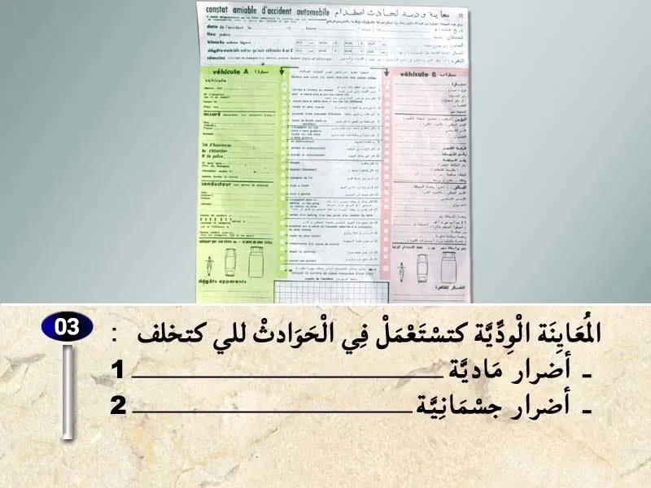
بيّن الجواب
الجواب الصحيح: 1
لدينا 2 انواع من الحوادث، النوع الاول حادثة ماديّة، والنوع الثاني حادثة جسمانية. الحادثة الماديّة هي حادثة تكون فيها الخسائر في السيارات مثلا أو دراجة أي انّها حادثة لا يكون فيها إنسان مصاب. أمّا بالنسبة للحادثة الجسمانية فهي التي تكون فيها حادثة السّير فيها جرحى أو قتلى يعني تصيب جسم الإنسان لذلك تم تسميتها بجسمانية. وبالنسبة للمعاينة الوديّة فنستعملها فقط في الحوادث التي فيها أضرار ماديّة، أي عربة مع عربة مثلا. أمّا عندما تكون حادثة فيها أضرار جسمانية فيتكلّف في هذه الحالة رجال الشرطة داخل المجال الحضري، أو الدرك الملكي إذا كانت الحادثة الجسمانية خارج المجال الحضري.
السؤال 4
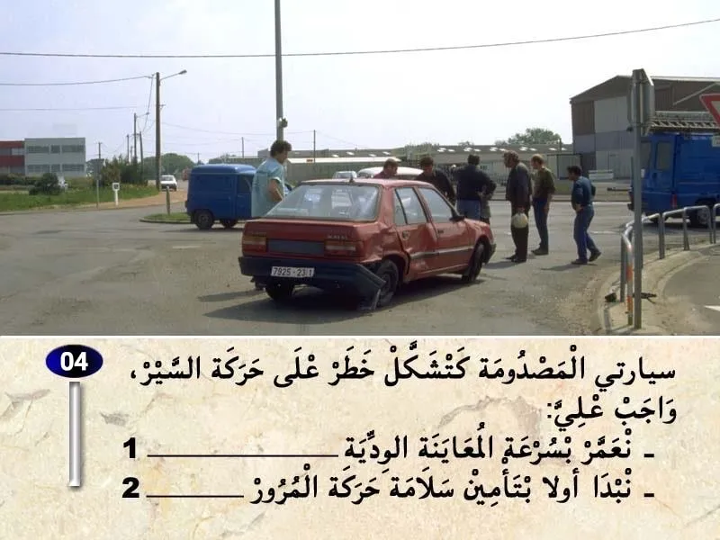
بيّن الجواب
الجواب الصحيح: 2
بما أن الحادثة الطّرقية تشكّل خطر على حركة السّير إذا أول شيئ يجب عليّ القيام به هو حماية وتأمين مكان الحادث لكي لا تقع حادثة أخرى، لأنه لو بدأنا بملئ المعاينة الودّية أولا دون حماية مكان الحادث فيوجب خطر أن لا تنتبه السيارات الأخرى لمكان الحادث وتقع حادثة أخرى. لذلك دائما نقوم أولا بتأمين وحماية مكان الحادث لسلامة حركة المرور وبعد ذلك نقوم بملئ المعاينة الودّية.
السؤال 5
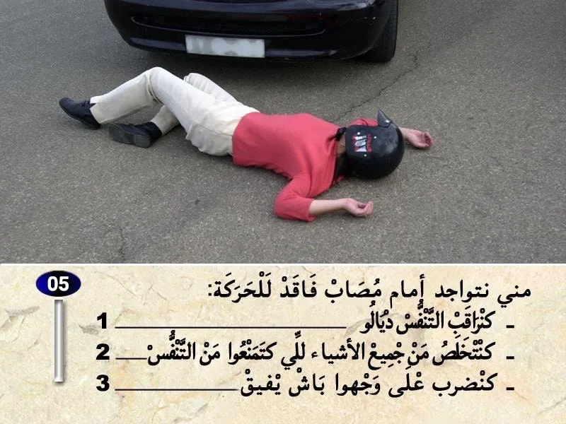
بيّن الجواب
الجواب الصحيح: 1 و 2
عندما نتواجد قرب مصاب فاقد الحركة فأول شيئ نقوم بمراقبة هل هو يتنفس أم لا، وبعد ذلك نتحقق هل توجد أشيائ تمنعه من التّنفس، مثلا ربطة عنق أو حزام السروال لأنه هو أيظا يعيق التنفس و ... إلخ اي شيئ يعيق تنفس المصاب نقوم بنزعها. بالنسبة للخودة (casque) فلا يمكننا نزعه لأنه يشكل خطر على حياته إدا كان مصاب في الرأس لذلك ننتظر وصول سيارة الإسعاف. كما أننا لا نقوم بضربه على وجهه لكي يستيقط.
السؤال 6
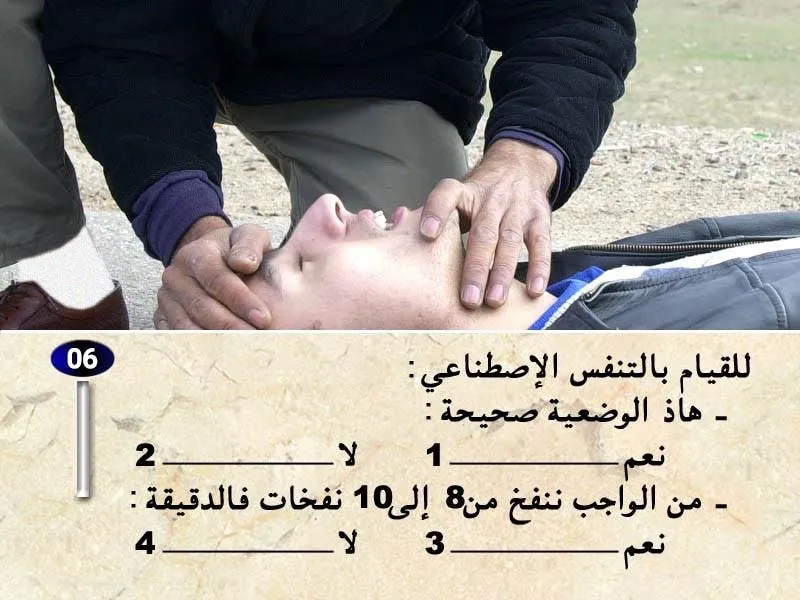
بيّن الجواب
الجواب الصحيح: 1 و 4
لكي نقوم بعملية التنفّس الإصطناعي لمصاب يجب أن نضع راحة اليد على جبهة الوجه كما هو واضح في الصورة، ونقوم كذلك برفع رأسه قليلا لكي نحرر قصبته الهوائية لكي نتمكن من عملية التنفّس الإصطناعي. بالنسبة لعدد النفخات فإذا كان شخص راشد فنقوم بعمل عدد نفخات بين 12 نفخة و15 نفخة (لذلك الإجابة في هذا السؤال هي 4 لا) وإذا كان طفل فعدد النفخات يكون حتى 30 نفخة في الدقيقة.
السؤال 7
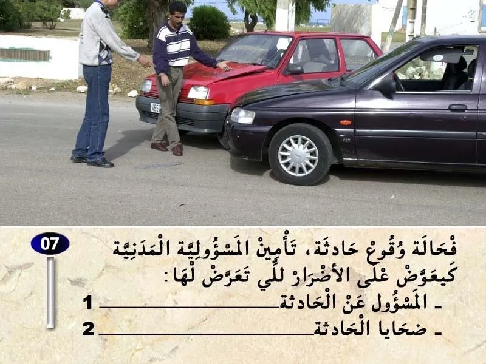
بيّن الجواب
الجواب الصحيح: 2
بالنسبة للمسؤولية المدنية هو الذي نسميه التأمين الدنيوي الإجباري (هو أدنى تأمين نقوم بعمله لدى شركة التأمين) وفي حالة وقوع حادثة فهذا النوع من التامين يقوم بتعويضنا عن الخسائر التي يتسبب فيها الاخرين، يعني إذا تسبب لك شخص اخر في خسارة فهذا النوع من التأمين سوف يقوم بتعويضك. لكن إذا كنت أنت المتسبب في الحادثة فهذ النوع من ا التأمين لا يقوم بتعوضيك في هذه الحالة. لذلك تامين المسؤولية المدنية يقوم بالتعويض على الأضرار التي تعرّض لها ضحايا الحادثة.
السؤال 8
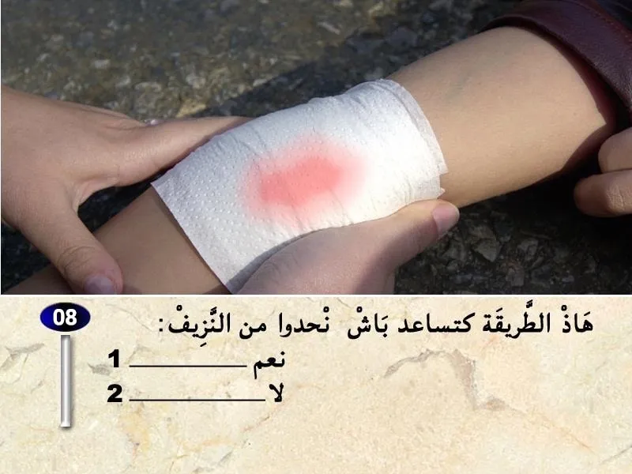
بيّن الجواب
الجواب الصحيح: 1
عندما يوجد نزيف لجريح فهذه الطريقة التي تظهر في الصورة هي فعالة للحد من نزيف الدم، إستعمال الضمادة هو حل جيد للمساعدة في الحد من نزيف الدم.
السؤال 9
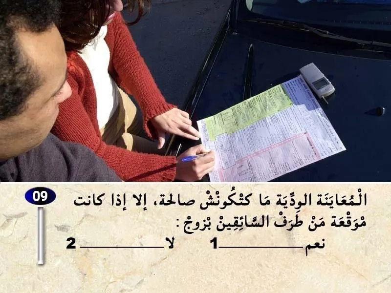
بيّن الجواب
الجواب الصحيح: 1
بطبيعة الحال فتوقيع السائقين في المعاينة الودية معناه أن السائقين متفقين على ما هو موجود في المعاينة الودّية، لذلك إذا لم تكن موقّعة من طرف السائقين فهي لا تكون صالحة في هذه الحالة.
السؤال 10
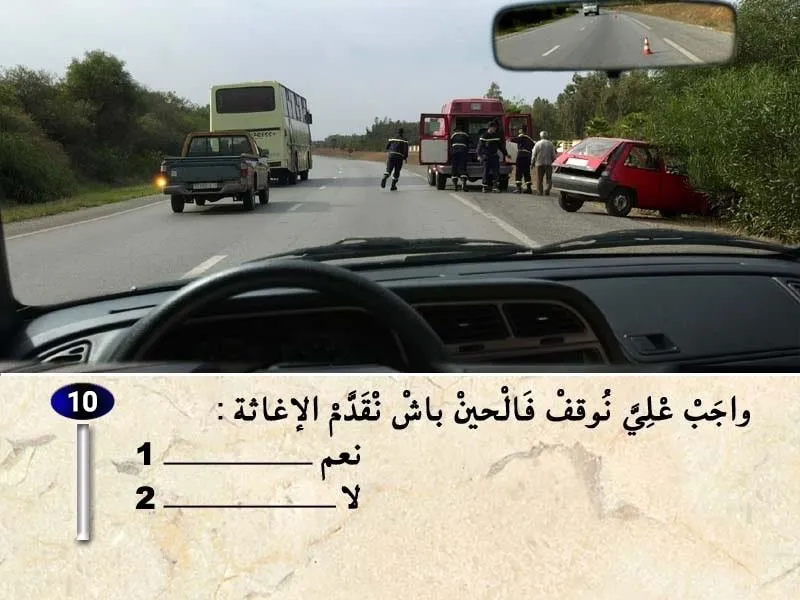
بيّن الجواب
الجواب الصحيح: 2
كما هو ظاهر في الصورة فتوجد سيارة الإسعاف في مكان الحادث لذلك ليس من الواجب عليّ أن أتوقف. (لو كنت انا أول شخص شاهد الحادثة ولم تكن هنالك سيارة إسعاف أو شخص اخر يكون بالإغاثة ففي هذه الحالة من الواجب عليّ الوقوف و أن أقوم بتأمين مكان الحادث والإتّصال بالإسعاف).
السؤال 11
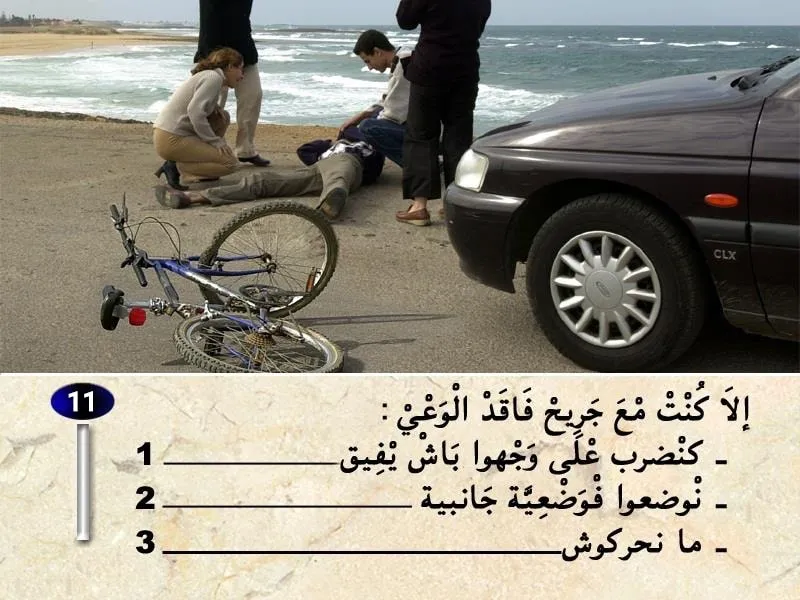
بيّن الجواب
الجواب الصحيح: 2
في حالة وجدنا جريح فيجب أن نضعه في وضعية جانبية، لا نقوم بضربه على وجهه فهذا فعل خطأ، وكذلك يجب تحريكه لكي نقوم بوضعه في الوضعية الجانبية، وليس عدم تحريكه، فكيف سوف نقوم بوضعه في الوضعية الجانبية بدون تحريكه؟ الجواب الصحيح هو رقم 2.
السؤال 12
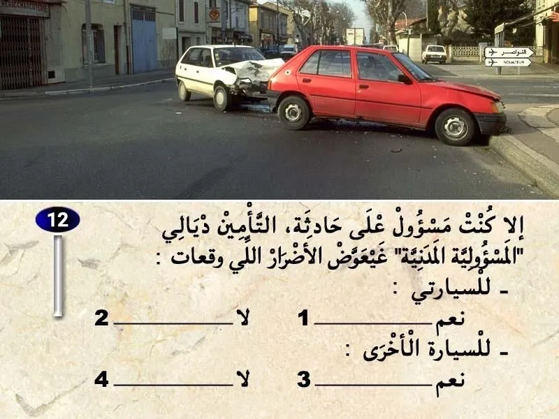
بيّن الجواب
الجواب الصحيح: 2 و 3
إذا كنت أنا المسؤول عن الحادثة الطّرقية وكان لديّ تأمين المسؤولية المدنية (التأمين الدنيوي الإجباري) فإن هذا النوع من التأمين يقوم في هذه الحالة بتعويض السيارات الأخرى لأنك أنت المسؤول، ولا يقوم هذا النوع من التأمين بتعويضك إذا كنت أنت المسؤول عن الحادث.
السؤال 13
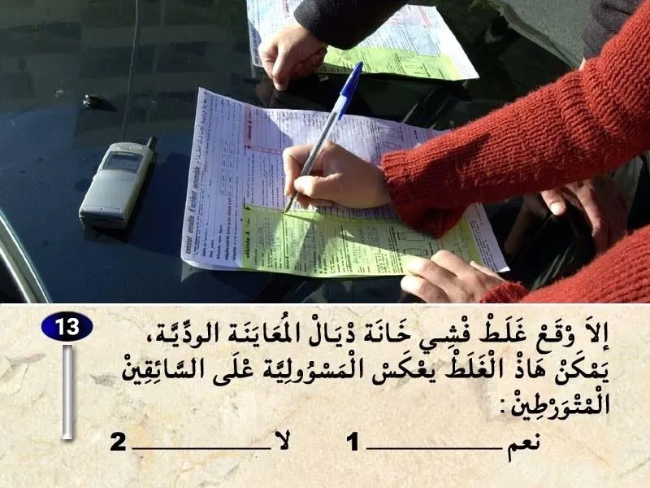
بيّن الجواب
الجواب الصحيح: 1
بالنسبة للمعاينة الودّية فهي تحتوي على 22 خانة، ويجب ملأها جميعها وأي خطأ يقع فيها فهو تصريح بالشخص على أن ذلك ما وقع في الحادثة المادّية وهذا سوف يؤدي إلى عكس المسؤولية على السائقين المتورطين، لذلك يجب التحقق جيدا من أن ما تمّ ملأه في المعاينة الودّية هو الصحيح وبعد ذلك التوقيع لكي لا يتسبب أي ملأ لأي خانة بالخطأ في عكس المسؤولية.
السؤال 14
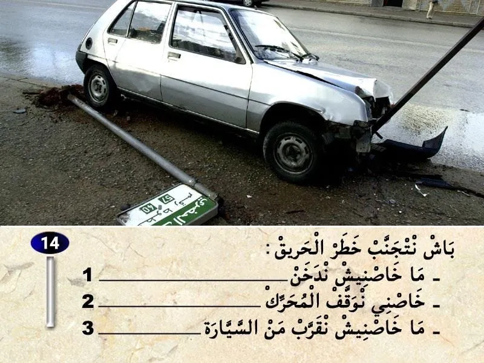
بيّن الجواب
الجواب الصحيح: 1 و 2
لكي نتجنب حريق لعربة أثناء إصطدامها بشيئ ما، فيجب علينا عدم التدخين لأنه قد يتسبب في حريق إذا كان البنزين يتسرّب، كما أنه يجب علينا إطفاء محرك العربة لكي لا يقع أي إنفجار خطير.
السؤال 15
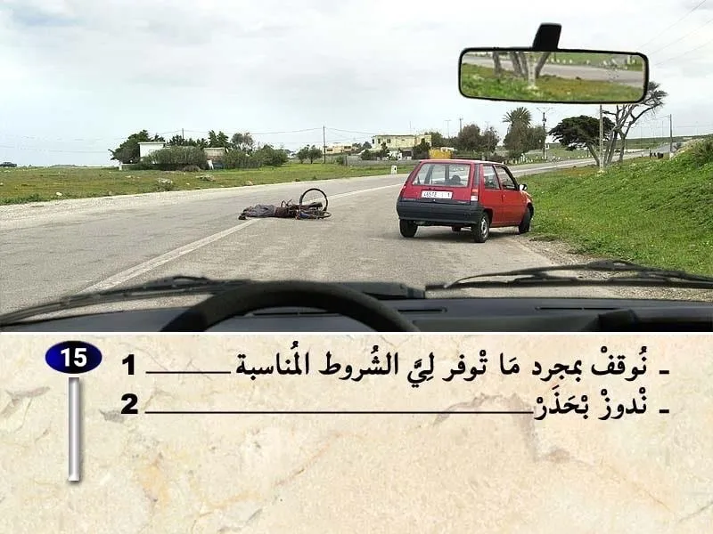
بيّن الجواب
الجواب الصحيح: 1
إذا كنّا نحن أول الأشخاص الذين وجدنا الحادثة الطّرقية فمن الواجب علينا قانونيا التوقّف في مكان مناسب قرب مكان الحادث وعمل كل ما يلزم في هذه الحالة. إذن في هذه الحالة يجب عليّ التوقّف عند وجود الشروط المناسبة (مثلا مكان امن قرب الحادثة أو على جانب الطريق).
السؤال 16
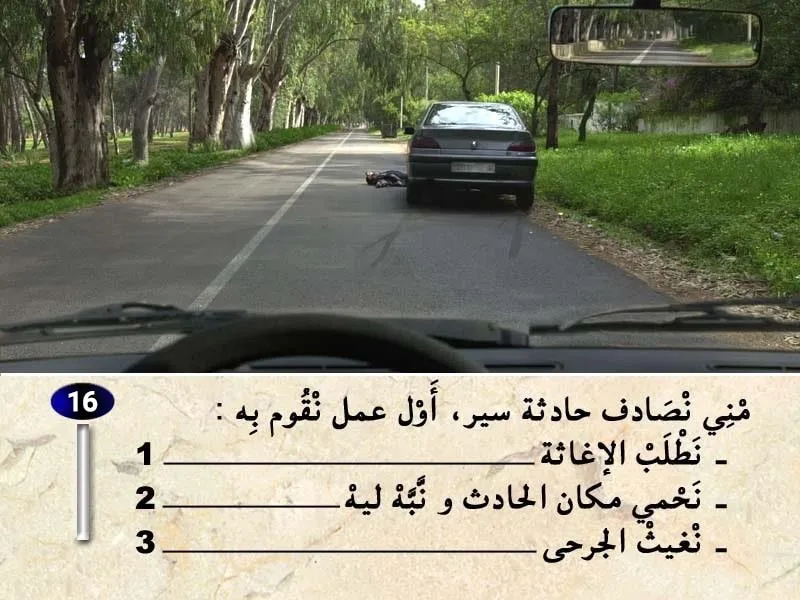
بيّن الجواب
الجواب الصحيح: 2
عندما نصادف حادثة سير فإن جميع الأشياء المذكورة في السؤال سوف نقوم بها لكن أول عمل نقوم به هو أن نقوم بحماية مكان الحادث وننبّه له (لكي لا تقع حادثة أخرى مع العربات التي سوف تمّر من مكان الحادث).
السؤال 17
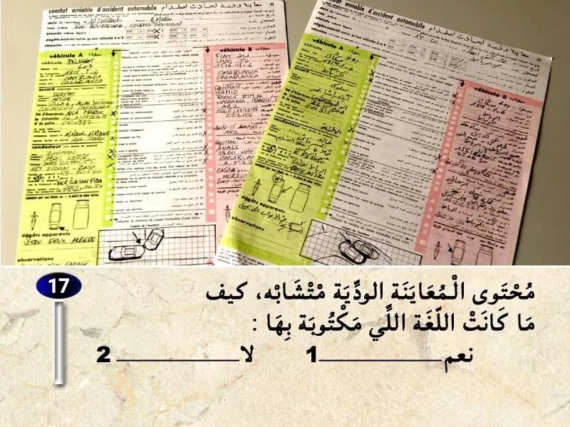
بيّن الجواب
الجواب الصحيح: 1
محتوى المعاينة الودّية فهو يعني ما هو مكتوب داخل المعاينة الودّية، وبالنسبة لهذا المحتوى فهو لا يتغير كيفما كانت اللغة المكتوبة به فهي تعني نفس الشيئ ولا يوجد تغيير في خانات المعاينة الودّية. إذن محتوى المعاينة الودّية متشابه كيفما كانت اللّغة المكتوبة بها.
السؤال 18
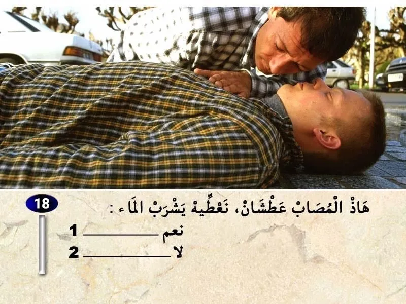
بيّن الجواب
الجواب الصحيح: 2
بعض الأشياء لا يجب فعلها أثناء للمصاب ومن بينها إعطائه شرب الماء، لأنه يمكن هذا أن يؤدي له إلى إصابة اخرى (كما أننا لسنا أطبّاء) يجب إنتظار سيارة الإسعاف وسوف يقوم المُسعفون بإسعاف الشخص المصاب ويقومون بتقدير حالته وهل يمكن له أن يشرب الماء أم أن شرب الماء سوف يضرّه. أما نحن فلسنا مسؤولين عن أفعال قد تؤدي إلى سوء حالة المصاب أكثر.
السؤال 19
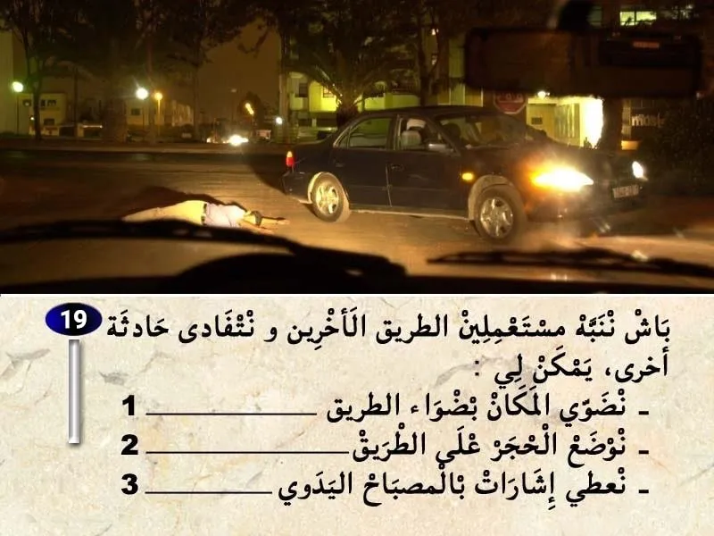
بيّن الجواب
الجواب الصحيح: 1 و 3
أثناء تواجدنا في مكان حادث في الفترة الليلية ولكي نتفادى وقوع حادثة أخرى بسبب الحادثة، ففي هذه الحالة يمكننا إستعمال أضواء الطّريق لكي يكون مكان الحادث واضح بالنسبة للعربات التي سوف تأتي في هذه الطريق، كما أنه لا بأس في إعطاء إشارات بالمصباح اليدوي إذا كنا نتوفر عليه فهو أيظا يساعد في التنبيه لمكان الحادث. بالنسبة لوضع الحجر على الطريق فهذا غير منطقي ولا جدوى منه بل بالعكس سوف يسبب فوضى في الطريق ويسبب كذلك في حوادث أخرى. الإجابة الصحيحة هي رقم 1 و 3.
السؤال 20
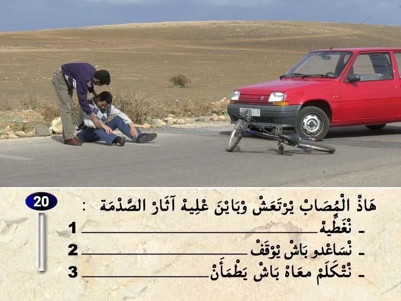
بيّن الجواب
الجواب الصحيح: 1 و 3
بما أن المصاب يرتعش لأنه يشعر بالصدمة بسبب الحادث فلابأس بتغطيته، وكذلك نتكلم معه لكي يطمأن أنه لا يوجد شيئ يدعو للقلق ولكي لا يبقى مصدوم، لكن لا أقوم بمساعدته لكي يقف لأنه مصاب وحاليا يحتاج إلى بعض الوقت لكي يستوعب الحالة وحادثة السّير.
السؤال 21
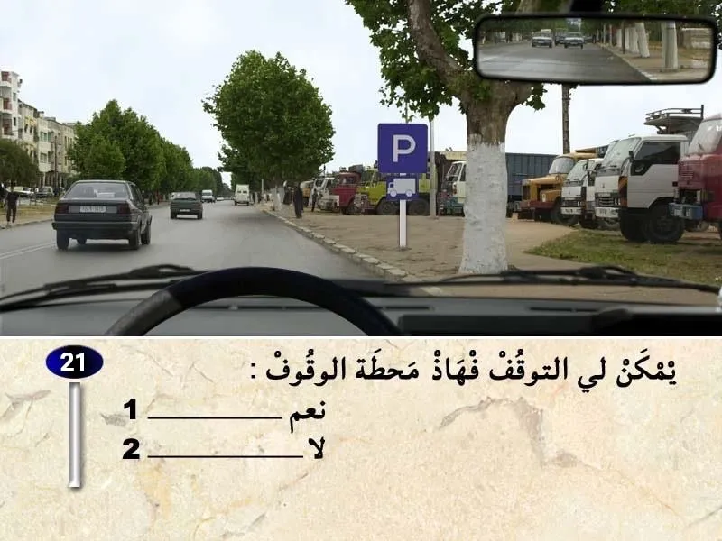
بيّن الجواب
الجواب الصحيح: 2
بالنسبة للعلامة الطّرقية فهي تعني أنه موقف خاص بالعربات نقل البضائع، (لذلك بالنسبة لنا بما أننا نجتاز رخصة السياقة من النوع باء B أي العربات الخفيفة إذن لا يمكننا التوقّف في هذا المكان لأنه خاص بعربات نقل البضائع).
السؤال 22
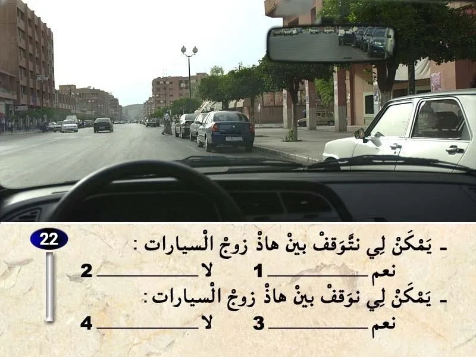
بيّن الجواب
الجواب الصحيح: 1 و 3
كما نلاحظ فإن بين هذه السيارتين فإن الرصيف غير مصبوغ بالأبيض والأحمر وغير مصبوع بالأصفر كما أنه لا توجد علامة طرقية تمنعني من الوقوف أو التوقّف ولا يوجد ممر راجلين بين هذه السيارتين يمنعني من الوقوف أو التوقّف، إذن في هذا المكان بين هذه السيارتين يمكنني الوقوف ويمكننا كذلك التوقّف.
السؤال 23
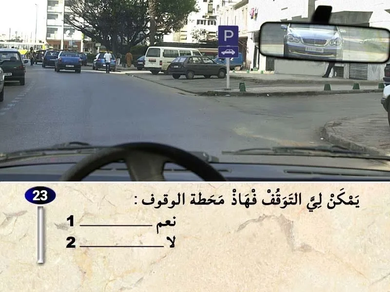
بيّن الجواب
الجواب الصحيح: 1
العلامة الطّرقية تعني أنه موقف خاص بالعربات الخفيفة (وليس موقف خاص بعربات نقل البضائع) إذن بما أن العلامة الطّرقية تعنيني وتعني أنه موقف خاص بالعربات الخفيفة ويمكنني التوقف به.
السؤال 24
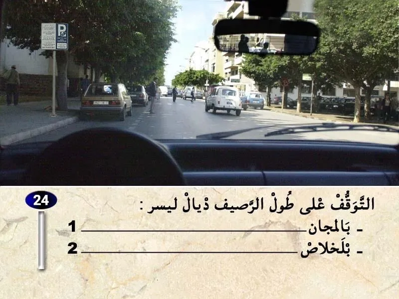
بيّن الجواب
الجواب الصحيح: 2
العلامة الطّرقية الموجودة على الجهة اليسرى فهي تعني أن هذا الموقف فهو غير مجاني ويجب الأداء للتوقّف فيه.
السؤال 25
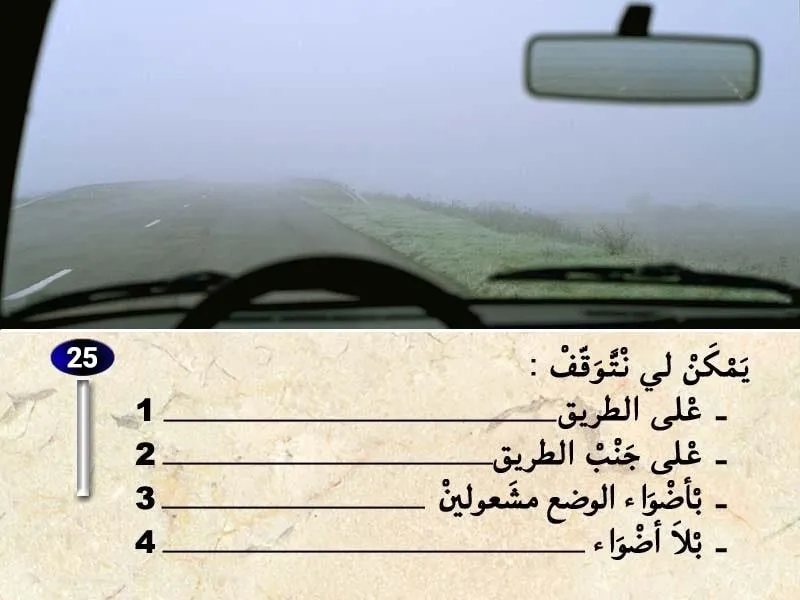
بيّن الجواب
الجواب الصحيح: 2 و 3
على جانب الطريق (أو على حاشية الطّريق) فلا يوجد مشكل في الوقوف أو التوقّف لأننا لسنا في منعرج إلى اليمين ( تذكير: في المنعرجات إلى الجهة اليمنى لا يمكننا الوقوف أو التوقّف لأن هذا يحجب الرؤية بالنسبة للسيّارات التي تأتي من الوراء) في هذه الحالة الجوية وفي وجود الضّباب فالرؤية صعبة لذلك يجب إستعمال أضواء الوضع أثناء التوقّف ونحن على جانب الطّريق. (بالنسبة لأضواء الضّباب الأمامية والخلفية وأضواء التّقابل فنقوم بإستعمالها أثناء السّير، نحن الان نريد التوقّف ولسنا أثناء السّير).
السؤال 26
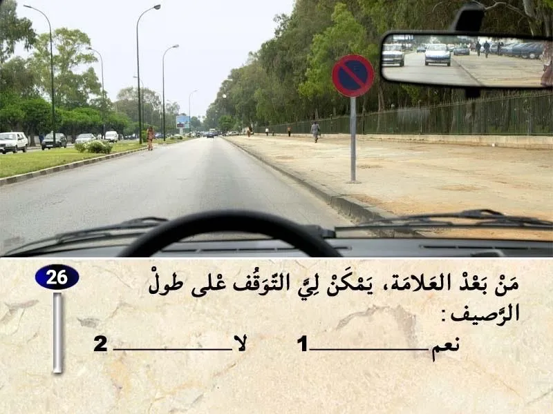
بيّن الجواب
الجواب الصحيح: 2
العلامة الطّرقية تعني أنه ممنوع التوقّف. هذا المنع يبدأ من عند العلامة (علامة وضع، لأن المنع سوف يبدأ من عند العلامة) وسوف ينتهي هذا المنع في ملتقى الطّرق القادم. لذلك إبتداء من هذه العلامة الطّرقية فممنوع عليّ التوقّف على طول الرّصيف. (الوقوف مسموح به، العلامة تمنع التوقّف وليس الوقوف).
السؤال 27
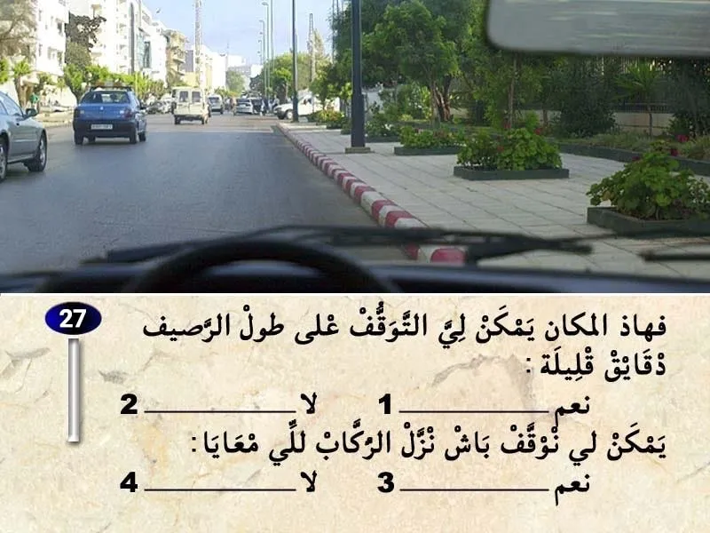
بيّن الجواب
الجواب الصحيح: 2 و 3
بالنسبة لهذه الحالة لدينا رصيف مصبوغ باللون الأبيض والأحمر، الرّصيف المصبوغ باللون الأبيض والأحمر يمنع التوقّف ولا يمنع الوقوف (التوقّف هو ركن السيارة وغلق الأبواب والذهاب، اما الوقوف فهو انزال راكب او تفريغ حمولة الخ وتكملة السّير... الوقوف يكون ممنوع أيضا عندما يكون خط متصل قرب الرّصيف، والذي يمنع الوقوف والتوقّف. إذن في هذه الحالة بما أن الرّصيف مصبوغ باللون الأبيض والأحمر فلا يمكنني التوقّف ولكن يمكنني الوقوف لإنزال الركّاب وتكملة السّير. الإجابة الصحيحة هي رقم 2 و 3.
السؤال 28
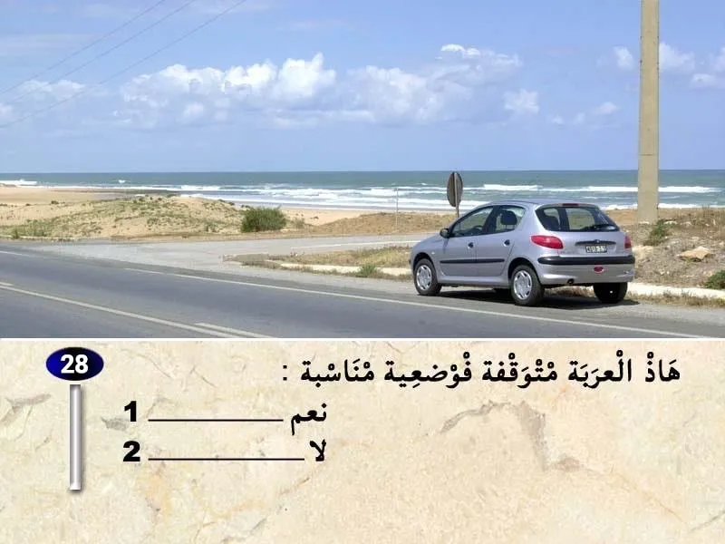
بيّن الجواب
الجواب الصحيح: 2
العربة غير متوقّفة في وضعية مناسبة لأنها قريبة من ملتقى الطّرق. والقاعدة تقول على أنه في ملتقى الطّرق فممنوع الوقوف وممنوع التوقّف.
السؤال 29
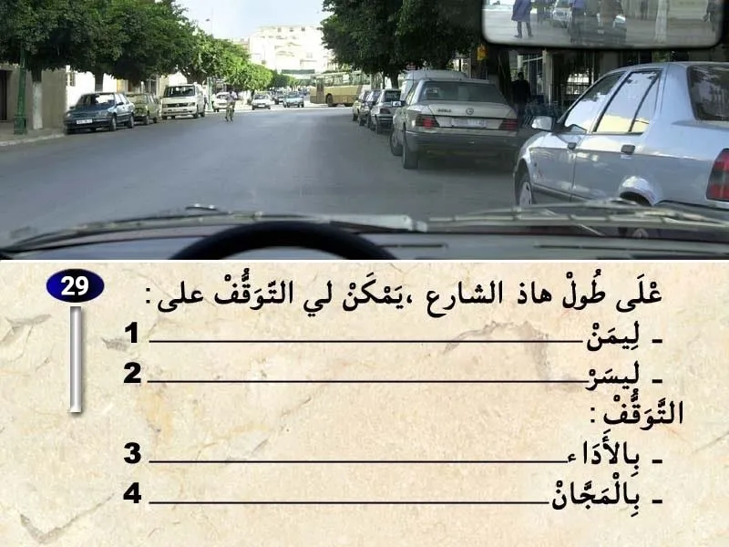
بيّن الجواب
الجواب الصحيح: 1 و 4
الطّريق ذات إتّجاهين (يعني هنالك عربات قادمة من الإتجاه المعاكس) وبما أنه لا توجد علامة طرقية أو تشوير طرقي يمنعني من عملية التوقّف ففي هذه الحالة يمكنني التوقّف على اليمين فقط بما أن الطريق ذات إتّجاهين. بالنسبة للتوقّف فهو بالمجّان لأنه لا توجد علامة تعلمني على أن التوقّف هنا بالأداء. إذن يمكنني التوقّف على اليمين، والتوقّف فهو بالمجّان.
السؤال 30
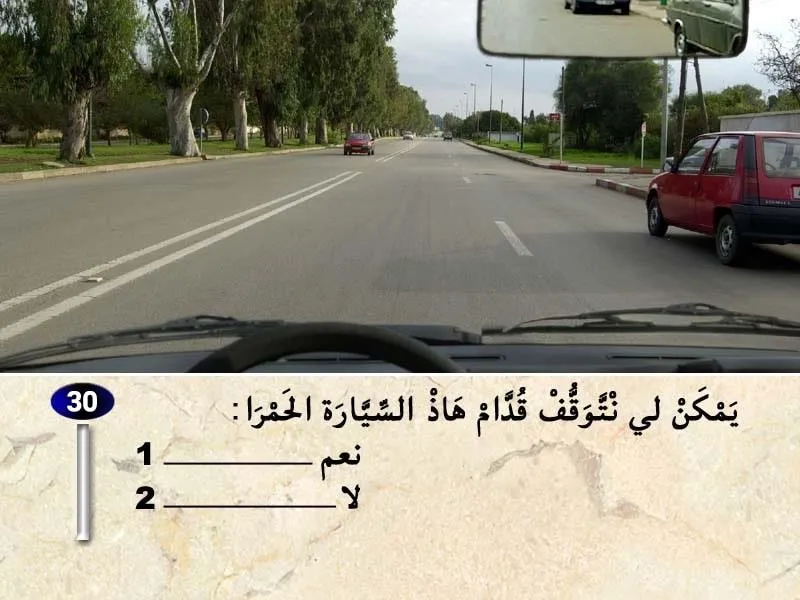
بيّن الجواب
الجواب الصحيح: 2
لا يمكنني التوقّف قرب السيّارة الحمراء لأنه يوجد ملتقى الطرق وقرب ملتقى الطرق فممنوع الوقوف وممنوع أيظا التوقّف، بالإظافة لأن الرّصيف مصبوغ باللون الأبيض والأحمر وهذا يعني أنه ممنوع الوقوف وممنوع التوقّف.
السؤال 31
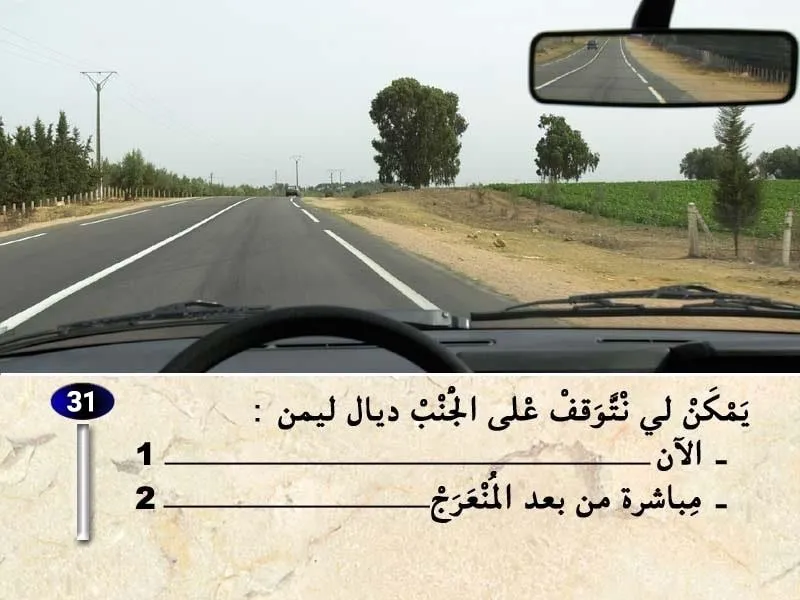
بيّن الجواب
الجواب الصحيح: 1
يمكنني التوقّف الان لأنه يوجد مسافة كافية الان قبل المنعرج للتوقّف على جانب الطّريق، لكن لا يمكنني التوقّف مباشرة بعد المنعرج لأن هذا ممنوع لأنه سوف يكون هنالك خطر على العربات القادمة من الخلف خصوصا وأن الرؤية في المنعرج لليمين لا تكون واضحة. لذلك لا يمكنني التوقف على الجانب الأيمن للطريق بعد المنعرج مباشرة.
السؤال 32
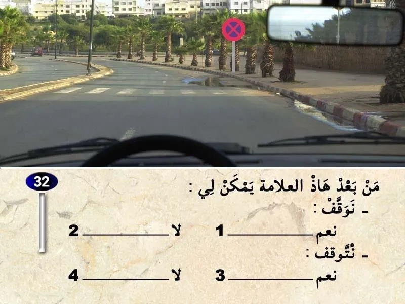
بيّن الجواب
الجواب الصحيح: 2 و 4
العلامة الطّرقية تعني أنه ممنوع الوقوف والتوقّف، يعني أنه إبتداء من العلامة حتى ملتقى الطرق القادم فممنوع عليّ الوقوف أو التوقّف. إذن بعد العلامة لا يمكنني الوقوف ولا يمكنني التوقّف.
السؤال 33
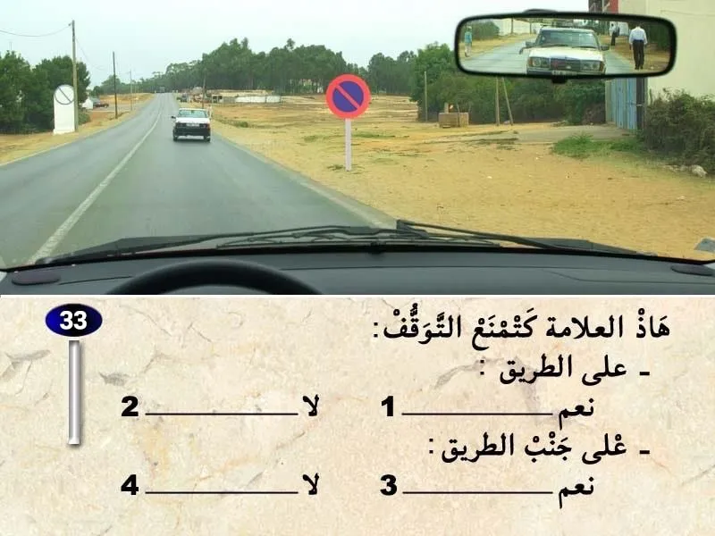
بيّن الجواب
الجواب الصحيح: 1 و 3
العلامة الطّّرقية تعني ممنوع التوقّف، إذن ممنوع عليّ التوقّف على الطريق، وممنوع عليّ التوقّف على جنب الطّريق.
السؤال 34
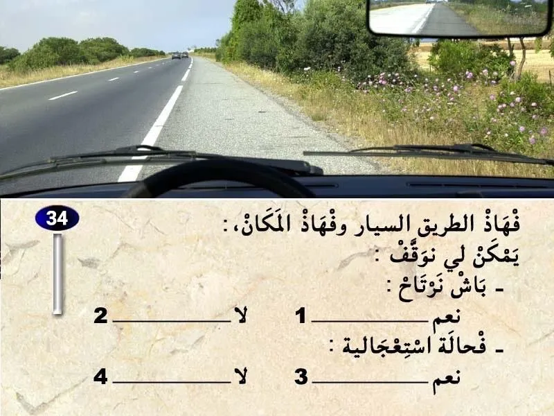
بيّن الجواب
الجواب الصحيح: 2 و 3
نحن نتواجد في طرق سيّار، نحن الان نتواجد في أقصى الطّريق كما تُظهر الصورة، وهذا المكان في الطّريق السيّار يُسمّى شريط التوقّف الإستعجالي، وهو مكان ممنوع فيه الوقوف والتوقّف، والحالة الوحيدة التي يمكننا فيها الوقوف والتوقّف هي في الحالات الإستعجالية مثل وقوع عطب في السيّارة أو وعكة صحّية تمنعني من السّياقة بشكل طبيعي. إذن لا يمكنني الوقوف للرّاحة ولكن يمكنني الوقوف إذا كانت هنالك حالة إستعجالية.
السؤال 35
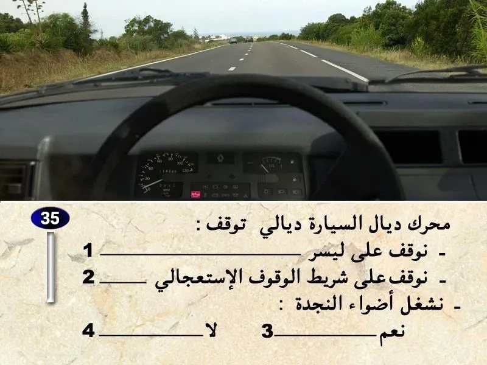
بيّن الجواب
الجواب الصحيح: 2 و 3
كما تُظهر الصورة ففي لوحة السيّارة نلاحظ أنه هنالك ضوء أحمر، وهذا يعني حالة إستعجالية، والسؤال يقول أن محرك السيّارة توقف، في هذه الحالة يجب علينا التوقّف فورا والتوقّف يكون على الجهة اليمنى في شريط التوقّف الإستعجالي ولا يمكننا التوقّف في مسلك التّجاوز أي الجهة اليسرى، فالتوقّف في هذه الحالة يكون على الجهة اليمنى في شريط التوقّف الإستعجالي. وأقوم بعد ذلك بإستعمال أضواء النجدة الأربعة الموجودة في السيارة لأنه يوجد عطب لدينا في السيّارة.
السؤال 36
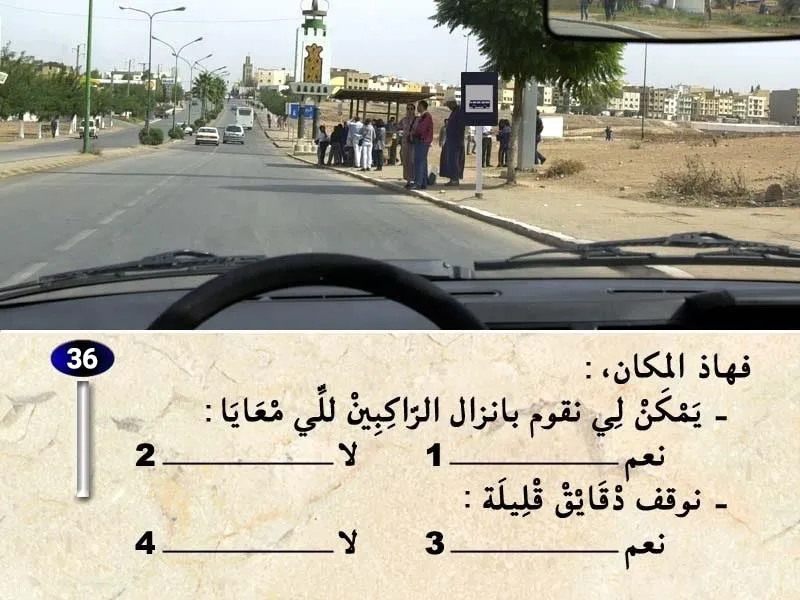
بيّن الجواب
الجواب الصحيح: 2 و 4
العلامة الطّرقية تعني أنه مكان خاص بالحافلات، وبما أنه مكان مخصص لصنف معين أي الحافلات إذن فهو مكان ممنوع على الأصناف الأخرى من العربات، أي ممنوع علينا الوقوف والتوقّف. إذن في هذا المكان المخصص للحافلات فلا يمكنني أن أقوم بإنزال الراكبين ولا يمكنني الوقوف لدقائق قليلة.
السؤال 37
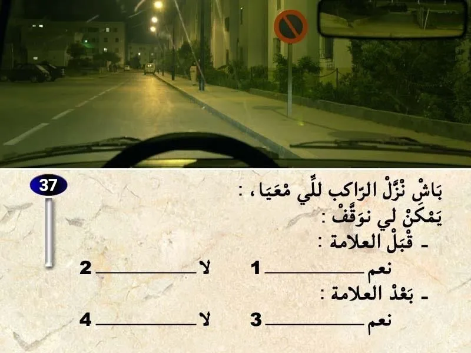
بيّن الجواب
الجواب الصحيح: 1 و 3
العلامة الطّرقية تعني ممنوع التوقّف فقط، وليس ممنوع الوقوف. إذن لإنزال راكب معي يمكنني الوقوف قبل العلامة أو يمكنني كذلك الوقوف بعد العلامة. (العلامة الطّرقية تمنعني من التوقّف ولا تمنعني من الوقوف).
السؤال 38
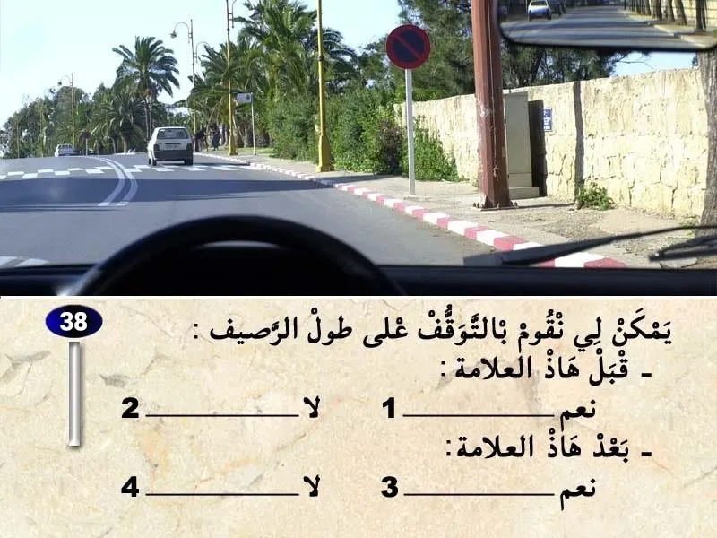
بيّن الجواب
الجواب الصحيح: 2 و 4
العلامة الطّرقية تعني أنه ممنوع التوقّف وكذلك يوجد رصيف مصبوغ باللّون الأبيض والأحمر وهو يمنعنا من التوقّف. إذن لا يمكننا التوقّف على طول الرّصيف قبل العلامة ولا يمكننا التوقّف على طول الرّصيف بعد العلامة.
السؤال 39
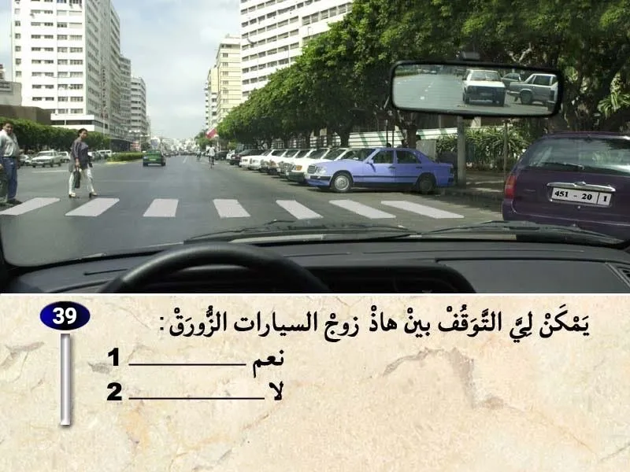
بيّن الجواب
الجواب الصحيح: 2
بين هذين السيّارتين يوجد ممر الراجلين، والقاعدة تقول على أنه لا يمكنني التوقّف ولا يمكنني الوقوف كذلك على ممر الراجلين.
السؤال 40
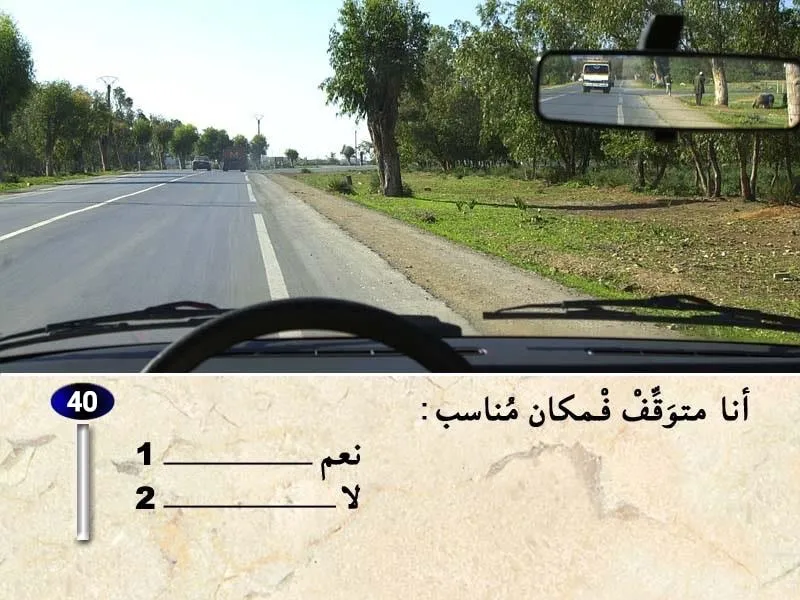
بيّن الجواب
الجواب الصحيح: 2
كما تظهر الصورة فالسيّارة متوقّفة في الطريق، وهذه الوضعية غير مناسبة للوقوف وكذلك غير مناسبة للتوقّف، يجب الخروج من الطريق بشكل كامل. هذه الوضعية تعرقل حركة السّير ويمكن أن تؤدي لحادثة طرقية.